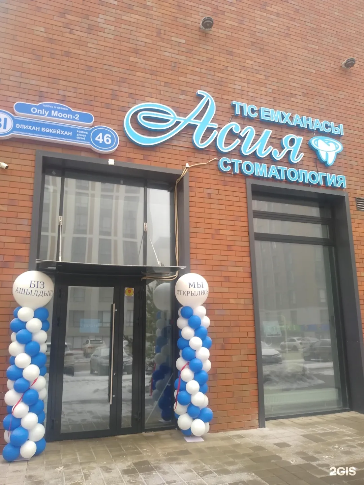
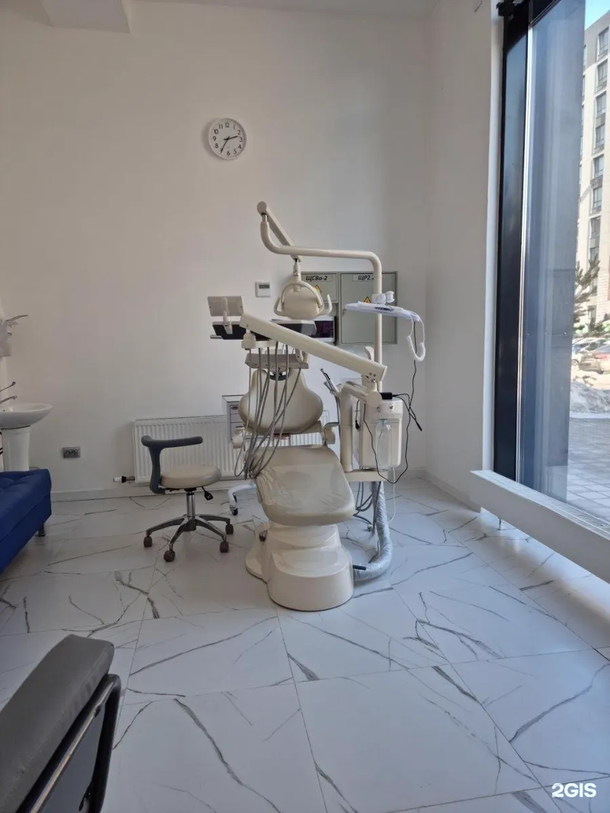
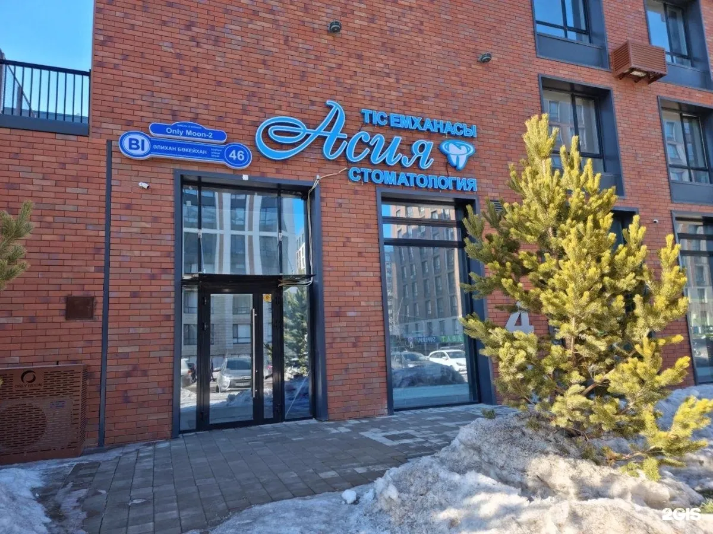

Айым Молдашевна
Лечит взрослых и детей
«Ей можно доверить даже глубокий кариес. Вылечили мне все зубы по ОСМС.»
Е. К. Бай, 9 сентября 2026
Лечение, удаление и ортодонтия. В 2ГИС 5,0 по 143 оценкам, в отзывах чаще всего пишут про детей.
«С детьми не каждый может работать. Здесь мне было спокойно за своих детей.»
Толеген Кусаинов, 2ГИС, 16 ноября 2026

Направления из шапки Instagram и карточки 2ГИС. Цену врач назовёт после осмотра.

Имена из отзывов 2ГИС за 2026 год. Фото врачей пока нет.
Лечит взрослых и детей
«Ей можно доверить даже глубокий кариес. Вылечили мне все зубы по ОСМС.»
Е. К. Бай, 9 сентября 2026
Лечит детей
«Очень спокойный, уверенно лечит.»
Толеген Кусаинов, 16 ноября 2026
Пришли к ней с острой болью
«Детям пролечили все зубы, я сама пошла с острой болью.»
Жаз Абегова, 24 августа 2026
Лечит детей
«Водил к ней своих детей. Всё прошло спокойно.»
Азамат Толегенов, 21 июня 2026
Ещё в отзывах благодарят Мадину Даулетовну и Алмаза Ахмедияұлы, а из медсестёр Ақсанат и Назым.
Пересказаны из 2ГИС, часть с казахского.
Детям Айше и Димашу вылечили зубы. Теперь они идут к стоматологу без страха.
Samal Karasai, 22 июля 2026
Дочке по ОСМС вылечили четыре зуба. В клинике чисто, персонал внимательный.
ಥ‿ಥ, 17 сентября 2026
Сыну тринадцать, лечили у Мадины Даулетовны. За день до визита напомнили о записи.
Айнура Сулейменова, 27 января 2026
Хорошее отношение у всех, от девушек на ресепшене до врачей.
Асем Мурзасеитова, 5 сентября 2026
В отзывах за 2026 год пишут, что детям и взрослым лечили зубы по ОСМС. Кому и что положено, уточните у администратора при записи.
Картой, наличными или по QR.
Да, у входа есть пандус.
Пн–Пт с 10:00 до 18:00, суббота с 10:00 до 14:00, воскресенье выходной.
Улица Алихан Бокейхан, 46, Есиль район. Вход с улицы, рядом табличка с номером дома.
